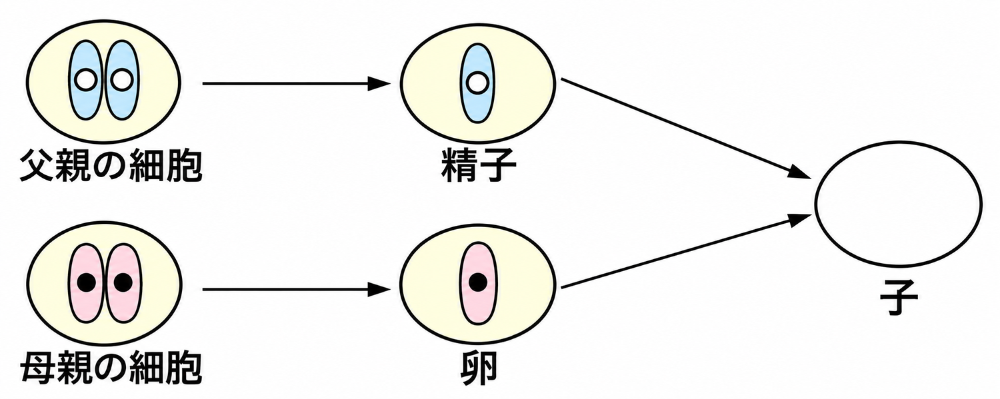
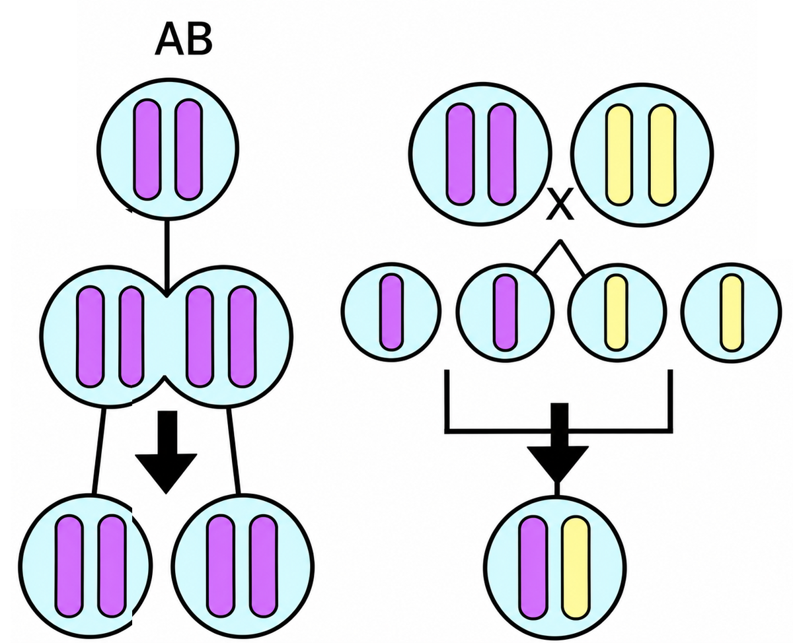

1形質・遺伝・遺伝子
📖 江原予備校テキスト 練習より
動物の親の特徴が子に伝えられるしくみについて確認します。
✏️ 練習1:形質・遺伝・遺伝子
問1図は、動物の親の特徴が子に伝えられるしくみを示したものである。生物がもつ形や性質を何というか。

親の特徴が子に伝わるしくみ
正解はイ。形質といいます。
問2親の形質が子に伝わることを何というか。
正解はア。遺伝といいます。
問3遺伝は、染色体の中にふくまれている何によって行われるか。
正解はエ。遺伝子によって行われます。
問4遺伝子の本体の略称はどれか。
正解はウ。DNA（デオキシリボ核酸）です。
問5精子や卵がつくられるとき、染色体の数はどうなり、その理由は何か。
正解はイ。卵と精子の染色体数を半分にしておくことで、受精したときに親の染色体の数と同じになります。
2遺伝のことば
📖 江原予備校テキスト 練習より
エンドウの形質について、ことばを確認します。
✏️ 練習2:遺伝のことば
問1エンドウの丸い種子としわのある種子のように、反対の形質を何というか。
正解はア。対立形質です。
問2花粉が同じ株の花のめしべに受粉することを何というか。
正解はエ。自家受粉です。
問3花粉が別の株の花のめしべに受粉することを何というか。
正解はウ。他家受粉です。
問4何代も受精をくり返しても同じ形質だけが現れる家系を何というか。
正解はイ。純系です。
問5受精について、両親の一方の形質だけが現れるとき、現れる形質を何というか。
正解はア。優性形質です。
問6優性形質に対して、現れないもう一方の形質を何というか。
正解はエ。劣性形質です。
32種類のふえ方の比較
📖 江原予備校テキスト 練習より
図は2種類の生物のふえ方を比べたものです。
✏️ 練習3:2種類のふえ方の比較
問1図のAのようなふえ方と、Bのようなふえ方の組み合わせとして正しいものはどれか。

2種類のふえ方
正解はウ。Aは親と同じ染色体の細胞に分裂するので無性生殖、Bは染色体が半分の細胞が合体するので有性生殖です。
問2Bのふえ方で、生殖のためにXのような細胞ができる。Xのような細胞を何というか。
2種類のふえ方
正解はイ。生殖細胞です。
問3Xのような細胞ができるときの分裂のしかたを何というか。
正解はア。減数分裂です。
問4Xの細胞どうしが合体して1つになることを何というか。
正解はエ。受精です。